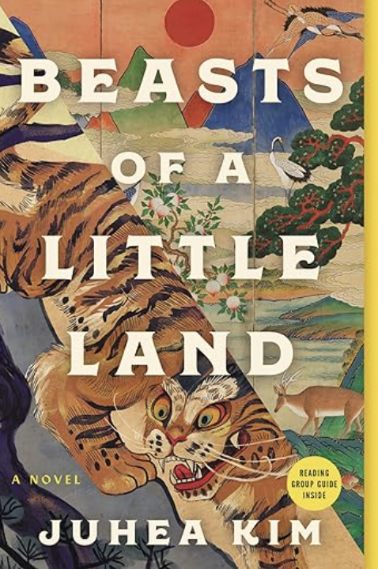

Beasts of a Little Land
Genre: Historical Fiction, War Drama, Epic Saga
Author: Juhea Kim
Description:
An epic tale of love, survival, and independence set against the backdrop of Korea’s struggle for liberation, following the intertwined lives of a courtesan and a beggar turned revolutionary.
Overview:
Beasts of a Little Land unfolds in early 20th-century Korea under Japanese occupation, beginning with a fateful encounter between a hunter and a Japanese officer. The story follows Jade, a young girl sold to a courtesan school, and JungHo, an orphaned beggar, whose lives are shaped by love, war, and destiny. As they navigate the shifting tides of a nation fighting for independence, Juhea Kim crafts an intricate, emotional tapestry of ambition, betrayal, and redemption.